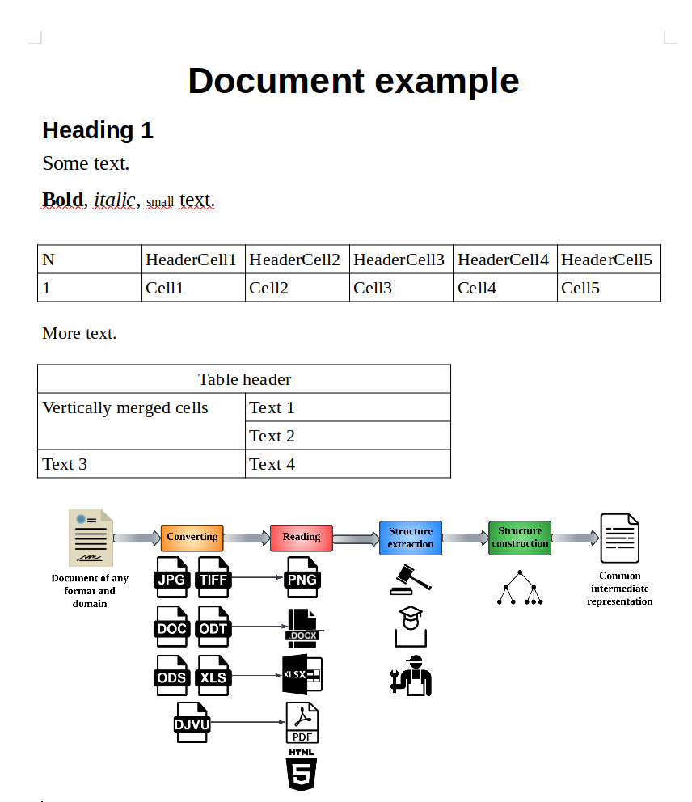

Dedoc usage tutorial
Suppose you’ve already have dedoc library installed. Otherwise Dedoc installation may be useful.
See also
You can use dedoc as an application, see Using dedoc via API for more information.
If you have installed dedoc using pip, you can use different parts of dedoc workflow separately.
In the context of this tutorial, you’ll need to include certain import statements to enable the proper functioning of dedoc.
from dedoc import DedocManager
from dedoc.attachments_extractors import DocxAttachmentsExtractor
from dedoc.converters import DocxConverter
from dedoc.metadata_extractors import DocxMetadataExtractor
from dedoc.readers import DocxReader
from dedoc.structure_constructors import TreeConstructor
from dedoc.structure_extractors import DefaultStructureExtractor
Using converters
Assume we have a file example.odt and we need to convert it to example.docx using dedoc library.
For this purpose one can use DocxConverter class:
converter = DocxConverter()
Method can_convert() allows to check if the converter can convert the given file:
file_path = "test_dir/example.odt"
converter.can_convert(file_path) # True
Since we have checked if the converter is able to convert the file,
we can convert it using convert() method:
converter.convert(file_path) # 'test_dir/example.docx'
See also
To get the information about available converters, their methods and parameters see dedoc.converters. The supported document formats that can be converted to another formats (which can be parsed by readers) are enlisted in the table Supported documents formats and the reader’s output.
Using readers
See also
To get the information about available readers, their methods and parameters see dedoc.readers. The supported document formats that can be handled by readers are enlisted in the table Supported documents formats and the reader’s output.
Let’s consider an example of using readers.
Assume we need to parse file example.docx, which looks like follows:
{kind=link}

document example
As we see, the file contains text of different styles, two tables and an attached image.
To read the contents of this file in the intermediate representation (see UnstructuredDocument)
one can use DocxReader class:
reader = DocxReader()
Method can_read() allows to check if the reader can parse the given file:
file_path = "test_dir/example.docx"
reader.can_read(file_path) # True
Since we have checked if the reader is able to read the file,
we can get its content (UnstructuredDocument) using read() method:
reader.read(file_path, parameters={"with_attachments": "true"}) # <dedoc.data_structures.UnstructuredDocument>
Let’s save the document in the variable and look at it in more detail:
document = reader.read(file_path, parameters={"with_attachments": "true"})
# Access and print the values without using 'result' variables or 'print' statements.
list(vars(document)) # ['tables', 'lines', 'attachments', 'warnings', 'metadata']
As we see, the document object has the following attributes: lines, tables, attachments, metadata and warnings.
Document metadata is the empty dict on this stage, because it should be filled by one of the metadata extractors (see dedoc.metadata_extractors and Using metadata extractors).
Document warnings – the list of strings with some warnings that occurred while document parsing.
So the most useful information is stored in lines, tables and attachments.
Document lines
The attribute lines in the UnstructuredDocument is a list of LineWithMeta.
We can get the text of any line:
document.lines[0].line # Document example
Also some of the readers can detect line types based of their styles, e.g.:
document.lines[0].metadata.tag_hierarchy_level.line_type # header
Formatting of each line is stored in the annotations attribute:
document.lines[0].annotations[0] # Indentation(0:16, 0)
document.lines[0].annotations[3] # Style(0:16, Title)
document.lines[3].annotations[4] # Size(0:14, 16.0)
document.lines[3].annotations[5] # Size(19:26, 16.0)
document.lines[3].annotations[6] # Bold(0:4, True)
document.lines[3].annotations[7] # Italic(6:12, True)
document.lines[3].annotations[8] # Size(14:19, 10.0)
See dedoc.data_structures to get more information about main classes forming a document line.
Document tables
The attribute tables in the UnstructuredDocument is a list of Table.
Each table is represented as a list of table rows, each row is a list of cells with additional metadata CellWithMeta.
cell = document.tables[0].cells[0][0]
cell # CellWithMeta(N)
cell.get_text() # N
cell.rowspan, cell.colspan, cell.invisible # (1, 1, False)
It also has metadata, containing table’s unique identifier, rotation angle (if table has been rotated - for images) and so on.
document.tables[0].metadata.uid # f2f08354fc2dbcb5ded8885479f498a6
document.tables[0].metadata.page_id # None
document.tables[0].metadata.rotated_angle # 0.0
All tables have rectangular form, so if the cells are merged, in the intermediate representation they aren’t and have the same contents. Use cells metadata for getting information about merged cells.
document.tables[1].cells[0][0].invisible # False
document.tables[1].cells[0][1].invisible # True
document.tables[1].cells[0][0].colspan # 2
document.tables[1].cells[0][1].colspan # 1
document.tables[1].cells[0][0].get_text() # Table header
document.tables[1].cells[0][1].get_text() # Table header
As we see in the document example, the second table has some merged cells, e.g. in the first row. In the intermediate representation this row consists of two cells, and the second cell contains the same text as the first one, but it’s invisible. Information about the fact that these cells are merged is stored in the colspan of the first cell.
The unique identifier links the table with the previous non-empty line in the document.
document.tables[0].metadata.uid # f2f08354fc2dbcb5ded8885479f498a6
document.lines[3].line # Bold, italic, small text.
document.lines[3].annotations[-1] # Table(0:26, f2f08354fc2dbcb5ded8885479f498a6)
In the current example (document example), the line with the text “Bold, italic, small text.” is the first non-empty line
before the first table, so the table uid is linked to this line using TableAnnotation.
Document attachments
The attribute attachments in the UnstructuredDocument is a list of AttachedFile.
In the document example there is an image attached to the file:
document.attachments[0].uid # attach_6de4dc06-0b75-11ee-a68a-acde48001122
document.attachments[0].original_name # image1.png
document.attachments[0].tmp_file_path # test_dir/1686830947_714.png
document.attachments[0].need_content_analysis # False
The tmp_file_path contains the path to the image saved on disk,
the image is saved in the same directory as the parent docx file.
The unique identifier of the attachment links it with the previous non-empty line in the document. In our document example it is a line with text “More text.”.
document.attachments[0].uid # attach_6de4dc06-0b75-11ee-a68a-acde48001122
document.lines[5].line # More text.
document.lines[5].annotations[-2] # Attachment(0:10, attach_6de4dc06-0b75-11ee-a68a-acde48001122)
The annotation uid is linked to the line using AttachAnnotation.
Using metadata extractors
Continue the example from the previous section.
The reader returned the intermediate representation of the document – UnstructuredDocument.
If we need to get some additional information about the file e.g. document subject or author,
we can add some metadata using DocxMetadataExtractor.
metadata_extractor = DocxMetadataExtractor()
Method can_extract() allows to check if
the metadata extractor can extract metadata from the given file:
metadata_extractor.can_extract(file_path) # True
To extract metadata, one can add them to the document using extract() method.
document.metadata = metadata_extractor.extract(file_path)
document.metadata # {'file_name': 'example.docx', 'temporary_file_name': 'example.docx',
# 'file_type': 'application/vnd.openxmlformats-officedocument.wordprocessingml.document', 'size': 373839, 'access_time': 1713964145,
# 'created_time': 1713958120, 'modified_time': 1709111749, 'document_subject': '', 'keywords': '', 'category': '', 'comments': '', 'author': '',
# 'last_modified_by': 'python-docx', 'created_date': None, 'modified_date': 1714635406, 'last_printed_date': None}
As we see, the attribute metadata has been filled with some metadata fields.
See also
The list of common fields for any metadata extractor along with the specific fields for different document formats are enlisted in dedoc.metadata_extractors.
Using attachments extractors
In the section Using readers we already got the attachments of the file along with its other contents. If there is a need to extract attachments without reading the whole content of the document, one can use dedoc.attachments_extractors.
For example, in the document example we can use DocxAttachmentsExtractor.
attachments_extractor = DocxAttachmentsExtractor()
Method can_extract() allows to check if the attachments extractor can extract attachments from the given file:
attachments_extractor.can_extract(file_path) # True
Since we have checked if the extractor can extract attachments from the file,
we can extract them it using extract() method:
attachments = attachments_extractor.extract(file_path)
attachments[0] # <dedoc.data_structures.AttachedFile>
As we see, attachment extractors return the same list of AttachedFile,
as in the attribute attachments of the UnstructuredDocument,
that we can get via readers (see Using readers).
See also
dedoc.attachments_extractors contains more information about available extractors, their methods and parameters.
Using structure extractors
After sections Using readers and Using metadata extractors we got an intermediate representation of the document content and its metadata.
The next step is to extract document structure, i.e. to find the HierarchyLevel for each document line.
This class contains information about the type and the level of the line (or its importance in the document).
Let’s extract the default structure based on the document styles:
structure_extractor = DefaultStructureExtractor()
document.lines[0].metadata.hierarchy_level # None
document = structure_extractor.extract(document)
document.lines[0].metadata.hierarchy_level # HierarchyLevel(level_1=1, level_2=1, can_be_multiline=False, line_type=header)
As we see, the hierarchy_level has been filled.
See also
See Default document structure type for more details about the default document structure. Use dedoc.structure_extractors to get the information about available structure extractors, their methods and parameters.
Using structure constructors
After we got the document content with hierarchy levels of each line (see Using readers, Using metadata extractors and Using structure extractors),
it’s possible to make the result class ParsedDocument.
Let’s construct the tree structure of the document:
constructor = TreeConstructor()
parsed_document = constructor.construct(document)
parsed_document # <dedoc.data_structures.ParsedDocument>
list(vars(parsed_document)) # ['metadata', 'content', 'attachments', 'version', 'warnings']
As we see, parsed document has similar attributes as UnstructuredDocument.
The main difference is in the content attribute, that contains hierarchical document structure and tables.
list(vars(parsed_document.content)) # ['tables', 'structure', 'warnings']
list(vars(parsed_document.content.structure)) # ['node_id', 'text', 'annotations', 'metadata', 'subparagraphs', 'parent']
parsed_document.content.structure.subparagraphs[0].text # Document example
To get more information about ParsedDocument, DocumentContent
and other classes, that form the output format, see dedoc.data_structures.
See also
See dedoc.structure_constructors for the description of available structure constructors and structure types. The description of API output JSON format also may be useful.
Run the whole pipeline
For running the whole pipeline with all readers, metadata and structure extractors, structure constructors, one may use manager class (see Dedoc pipeline for more details).
manager = DedocManager()
result = manager.parse(file_path=file_path)
result # <dedoc.data_structures.ParsedDocument>
result.to_api_schema().model_dump() # {'content': {'structure': {'node_id': '0', 'text': '', 'annotations': [], 'metadata': {'paragraph_type': 'root', ...
Manager allows to run workflow (see Workflow) for a file of any format supported by dedoc (see Supported documents formats and the reader’s output).
One can also make a custom config and manager_config (parameters of the manager constructor) for more flexible usage of the library.